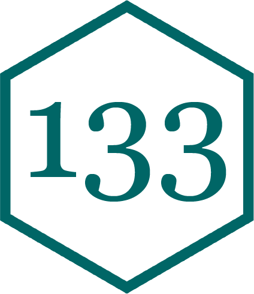

Tool Calls
Letting the LLM Use your Machine
Last Time
- Code completion predicts your next tokens.
- An LLM API is stateless.
- Context is all the text sent with a request.
- A system prompt leads every request.
Key Ideas for Today
- A tool is a function the client offers.
- The model requests a call; the client runs it.
- The result joins the context.
- A tool is described, like an endpoint.
Review
Where we left off
Your bake sale brought in a total revenue of $185 (cookies $80,
brownies $75, scones $30).Right answer, but found by predicting tokens, not by computing.
What if
bake_salehad 30,000 rows?
Can the model answer it?
- “What is the capital of Canada?”
- “What time is it in Berkeley right now?”
- “What’s the mean of the
body_mass_gcolumn in mypenguinsdata frame?” - “Which girl’s name was given most often in the US in 1995?”
With a neighbor: for each one, yes, no, or maybe. For each no, what would it need?
02:00
Asking for the time
I don't have access to real-time information, so I can't tell you the
current time in Berkeley, but you can check your device's clock or search
"time in Berkeley" for the current local time.Tools
A function for the model
Write an ordinary R function that does the job:
Describe it to the model
The model will never see the body of get_current_time(), only its name, its description, and the types of its arguments.
Tool
A function that a client offers to a model. The client sends the tool’s name, a description of what it does, and the types of its arguments with every request. The model can’t run the tool; it can only ask the client to.
This looks familiar…
A Plumber endpoint:
Your turn: a penguin tool
Write a tool() that offers this function to a model:
flipper is a number, and it’s required.
02:00
A penguin tool
Tool Calls
Register the tool
◯ [tool call] get_current_time(tz = "America/Los_Angeles")
● #> 2026-11-17 15:19:23 PST
It's currently 3:19 PM PST on November 17, 2026, in Berkeley.Who ran
get_current_time(): the model, or R on my laptop?
What happened?
<Chat Anthropic/claude-haiku-5-5 turns=4 input=930 output=89>
── user ─────────────────────────────────────────────────────────────
What time is it in Berkeley right now? Answer in one sentence.
── assistant [input=426 output=58] ──────────────────────────────────
[tool request (toolu_01Wb9S...)]: get_current_time(tz = "America/Los_Angeles")
── user ─────────────────────────────────────────────────────────────
[tool result (toolu_01Wb9S...)]: 2026-11-17 15:19:23 PST
── assistant [input=504 output=31] ──────────────────────────────────
It's currently 3:19 PM PST on November 17, 2026, in Berkeley.The first request and response
{
"model": "claude-haiku-5-5",
"tools": [
{"name": "get_current_time",
"description": "Gets the current time
in a given time zone.",
"input_schema": {
"type": "object",
"properties": {
"tz": {"type": "string",
"description": "A time zone
name, such as ..."}
}
}}
],
"messages": [
{"role": "user",
"content": "What time is it in
Berkeley right now?"}
]
}The second request
{
"model": "claude-haiku-5-5",
"tools": [ ... ],
"messages": [
{"role": "user",
"content": "What time is it in Berkeley right now?"},
{"role": "assistant",
"content": [{"type": "tool_use", "id": "toolu_01",
"name": "get_current_time",
"input": {"tz": "America/Los_Angeles"}}]},
{"role": "user",
"content": [{"type": "tool_result", "tool_use_id": "toolu_01",
"content": "2026-11-18 10:12:03 PST"}]}
]
}Response: “It’s currently 10:12 AM … in Berkeley”, with "stop_reason": "end_turn".
Tool Call
A response in which the model asks the client to run a tool with certain arguments. The client runs it and sends the result back as part of the context of a new request.

Tools that run R
Back to the data
What if the tool runs any R code?
run_r_code <- function(code) {
result <- eval(parse(text = code), envir = globalenv())
paste(capture.output(print(result)), collapse = "\n")
}
r_tool <- tool(
run_r_code,
name = "run_r_code",
description = "Runs R code in the user's R session and returns
what it prints. The tidyverse is loaded.",
arguments = list(code = type_string("R code to run."))
)1.9 million rows, never sent
◯ [tool call] run_r_code(code = "babynames %>% filter(year == 1995,
sex == \"F\") %>% slice_max(n, n = 1) %>% select(name, n)")
● #> # A tibble: 1 × 2
#> name n
#> <chr> <int>
#> 1 Jessica 27935
The most popular girls' name in 1995 was Jessica, given to 27,935
baby girls.Would you approve it?
The model requests run_r_code() with each code below. Run it, or reject it?
babynames |> filter(name == "Jessica") |> count(year)rm(list = ls())write_csv(penguins, "penguins.csv")unlink("~/stat133", recursive = TRUE)
01:30
The client decides what runs
Posit Assistant, in Positron, is a client with tools to read files, run R and shell code, and edit files. Its modes set which calls need your approval:
| Mode | Tool calls |
|---|---|
| Ask | Reading only; shows you code to run yourself. |
| Normal | Asks you before it runs code or edits a file. |
| Auto | A second model approves or rejects each call. |
Before Friday: set up Posit Assistant (Tools → Posit Assistant on the course site). Use Ask or Normal.
Guess the Metaphor
An LLM with tools is like a beehive: the hive can’t gather anything itself, so a bee dances directions, the foragers fly out to fetch, and what they bring back goes into the hive.
Key Ideas for Today
- A tool is a function the client offers.
- The model requests a call; the client runs it.
- The result joins the context.
- A tool is described, like an endpoint.
For Next Time
- Project Studio 5 this week.
- Set up Posit Assistant before Friday.
- PS 7 due 12/5.
- Next time: Agents.
